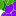

<!doctype html>
<html lang="en">
    <head>
        <meta charset="utf-8">
        <meta http-equiv="X-UA-Compatible" content="IE=edge">
        <meta name="viewport" content="initial-scale=1,user-scalable=no,maximum-scale=1,width=device-width">
        <meta name="mobile-web-app-capable" content="yes">
        <meta name="apple-mobile-web-app-capable" content="yes">
        <link rel="stylesheet" href="css/leaflet.css"><link rel="stylesheet" href="css/L.Control.Locate.min.css">
        <link rel="stylesheet" href="css/qgis2web.css"><link rel="stylesheet" href="css/fontawesome-all.min.css">
        <link rel="stylesheet" href="css/MarkerCluster.css">
        <link rel="stylesheet" href="css/MarkerCluster.Default.css">
        <link rel="stylesheet" href="css/leaflet-control-geocoder.Geocoder.css">
        <style>
        html, body, #map {
            width: 100%;
            height: 100%;
            padding: 0;
            margin: 0;
        }
        </style>
        <title></title>
    </head>
    <body>
        <div id="map">
        </div>
        <script src="js/qgis2web_expressions.js"></script>
        <script src="js/leaflet.js"></script><script src="js/L.Control.Locate.min.js"></script>
        <script src="js/leaflet.rotatedMarker.js"></script>
        <script src="js/leaflet.pattern.js"></script>
        <script src="js/leaflet-hash.js"></script>
        <script src="js/Autolinker.min.js"></script>
        <script src="js/rbush.min.js"></script>
        <script src="js/labelgun.min.js"></script>
        <script src="js/labels.js"></script>
        <script src="js/leaflet-control-geocoder.Geocoder.js"></script>
        <script src="js/leaflet.markercluster.js"></script>
        <script src="data/PortoLIcultura_1.js"></script>
        <script src="data/Portoluoghiinteresse_2.js"></script>
        <script>
        var map = L.map('map', {
            zoomControl:true, maxZoom:28, minZoom:1
        })
        var hash = new L.Hash(map);
        map.attributionControl.setPrefix('<a href="https://github.com/tomchadwin/qgis2web" target="_blank">qgis2web</a> &middot; <a href="https://leafletjs.com" title="A JS library for interactive maps">Leaflet</a> &middot; <a href="https://qgis.org">QGIS</a>');
        var autolinker = new Autolinker({truncate: {length: 30, location: 'smart'}});
        L.control.locate({locateOptions: {maxZoom: 19}}).addTo(map);
        var bounds_group = new L.featureGroup([]);
        function setBounds() {
            if (bounds_group.getLayers().length) {
                map.fitBounds(bounds_group.getBounds());
            }
        }
        map.createPane('pane_OSMStandard_0');
        map.getPane('pane_OSMStandard_0').style.zIndex = 400;
        var layer_OSMStandard_0 = L.tileLayer('http://tile.openstreetmap.org/{z}/{x}/{y}.png', {
            pane: 'pane_OSMStandard_0',
            opacity: 1.0,
            attribution: '<a href="https://www.openstreetmap.org/copyright">© OpenStreetMap contributors, CC-BY-SA</a>',
            minZoom: 1,
            maxZoom: 28,
            minNativeZoom: 0,
            maxNativeZoom: 19
        });
        layer_OSMStandard_0;
        map.addLayer(layer_OSMStandard_0);
        function pop_PortoLIcultura_1(feature, layer) {
            var popupContent = '<table>\
                    <tr>\
                        <th scope="row">Indirizzo</th>\
                        <td>' + (feature.properties['descriptio'] !== null ? autolinker.link(feature.properties['descriptio'].toLocaleString()) : '') + '</td>\
                    </tr>\
                    <tr>\
                        <th scope="row">Attivita\'</th>\
                        <td>' + (feature.properties['attività'] !== null ? autolinker.link(feature.properties['attività'].toLocaleString()) : '') + '</td>\
                    </tr>\
                    <tr>\
                        <th scope="row">Nome</th>\
                        <td>' + (feature.properties['attivit�_1'] !== null ? autolinker.link(feature.properties['attivit�_1'].toLocaleString()) : '') + '</td>\
                    </tr>\
                    <tr>\
                        <th scope="row">Sito web</th>\
                        <td>' + (feature.properties['attivit�_2'] !== null ? autolinker.link(feature.properties['attivit�_2'].toLocaleString()) : '') + '</td>\
                    </tr>\
                </table>';
            layer.bindPopup(popupContent, {maxHeight: 400});
        }

        function style_PortoLIcultura_1_0() {
            return {
                pane: 'pane_PortoLIcultura_1',
        rotationAngle: 0.0,
        rotationOrigin: 'center center',
        icon: L.icon({
            iconUrl: 'markers/cultura colori.jpg.svg',
            iconSize: [64.6, 64.6]
        }),
                interactive: true,
            }
        }
        map.createPane('pane_PortoLIcultura_1');
        map.getPane('pane_PortoLIcultura_1').style.zIndex = 401;
        map.getPane('pane_PortoLIcultura_1').style['mix-blend-mode'] = 'normal';
        var layer_PortoLIcultura_1 = new L.geoJson(json_PortoLIcultura_1, {
            attribution: '',
            interactive: true,
            dataVar: 'json_PortoLIcultura_1',
            layerName: 'layer_PortoLIcultura_1',
            pane: 'pane_PortoLIcultura_1',
            onEachFeature: pop_PortoLIcultura_1,
            pointToLayer: function (feature, latlng) {
                var context = {
                    feature: feature,
                    variables: {}
                };
                return L.marker(latlng, style_PortoLIcultura_1_0(feature));
            },
        });
        var cluster_PortoLIcultura_1 = new L.MarkerClusterGroup({showCoverageOnHover: false,
            spiderfyDistanceMultiplier: 2});
        cluster_PortoLIcultura_1.addLayer(layer_PortoLIcultura_1);

        bounds_group.addLayer(layer_PortoLIcultura_1);
        cluster_PortoLIcultura_1.addTo(map);
        function pop_Portoluoghiinteresse_2(feature, layer) {
            var popupContent = '<table>\
                    <tr>\
                        <th scope="row">Indirizzo</th>\
                        <td>' + (feature.properties['descriptio'] !== null ? autolinker.link(feature.properties['descriptio'].toLocaleString()) : '') + '</td>\
                    </tr>\
                    <tr>\
                        <th scope="row">Attivita\'</th>\
                        <td>' + (feature.properties['attività'] !== null ? autolinker.link(feature.properties['attività'].toLocaleString()) : '') + '</td>\
                    </tr>\
                    <tr>\
                        <th scope="row">Nome</th>\
                        <td>' + (feature.properties['attivit�_2'] !== null ? autolinker.link(feature.properties['attivit�_2'].toLocaleString()) : '') + '</td>\
                    </tr>\
                    <tr>\
                        <th scope="row">Sito web</th>\
                        <td>' + (feature.properties['attivit�_3'] !== null ? autolinker.link(feature.properties['attivit�_3'].toLocaleString()) : '') + '</td>\
                    </tr>\
                </table>';
            layer.bindPopup(popupContent, {maxHeight: 400});
        }

        function style_Portoluoghiinteresse_2_0() {
            return {
                pane: 'pane_Portoluoghiinteresse_2',
        rotationAngle: 0.0,
        rotationOrigin: 'center center',
        icon: L.icon({
            iconUrl: 'markers/vitivinicola colori bordo.svg',
            iconSize: [76.0, 76.0]
        }),
                interactive: true,
            }
        }
        map.createPane('pane_Portoluoghiinteresse_2');
        map.getPane('pane_Portoluoghiinteresse_2').style.zIndex = 402;
        map.getPane('pane_Portoluoghiinteresse_2').style['mix-blend-mode'] = 'normal';
        var layer_Portoluoghiinteresse_2 = new L.geoJson(json_Portoluoghiinteresse_2, {
            attribution: '',
            interactive: true,
            dataVar: 'json_Portoluoghiinteresse_2',
            layerName: 'layer_Portoluoghiinteresse_2',
            pane: 'pane_Portoluoghiinteresse_2',
            onEachFeature: pop_Portoluoghiinteresse_2,
            pointToLayer: function (feature, latlng) {
                var context = {
                    feature: feature,
                    variables: {}
                };
                return L.marker(latlng, style_Portoluoghiinteresse_2_0(feature));
            },
        });
        var cluster_Portoluoghiinteresse_2 = new L.MarkerClusterGroup({showCoverageOnHover: false,
            spiderfyDistanceMultiplier: 2});
        cluster_Portoluoghiinteresse_2.addLayer(layer_Portoluoghiinteresse_2);

        bounds_group.addLayer(layer_Portoluoghiinteresse_2);
        cluster_Portoluoghiinteresse_2.addTo(map);
        var osmGeocoder = new L.Control.Geocoder({
            collapsed: true,
            position: 'topleft',
            text: 'Search',
            title: 'Testing'
        }).addTo(map);
        document.getElementsByClassName('leaflet-control-geocoder-icon')[0]
        .className += ' fa fa-search';
        document.getElementsByClassName('leaflet-control-geocoder-icon')[0]
        .title += 'Search for a place';
        var baseMaps = {};
        L.control.layers(baseMaps,{' Aziende vitivinicole': cluster_Portoluoghiinteresse_2,' Luoghi di interesse': cluster_PortoLIcultura_1,"Base Map": layer_OSMStandard_0,},{collapsed:false}).addTo(map);
        setBounds();
        </script>
    </body>
</html>
